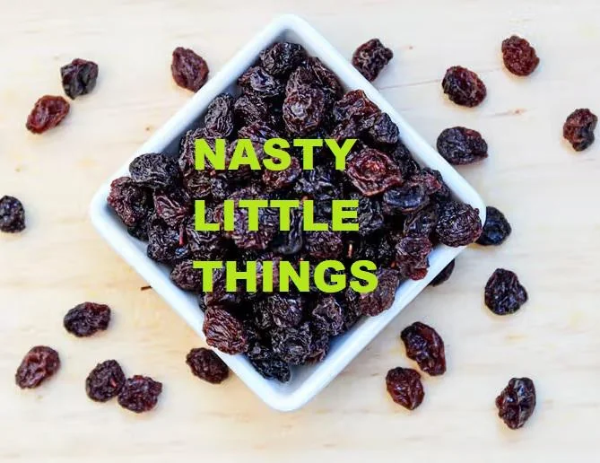
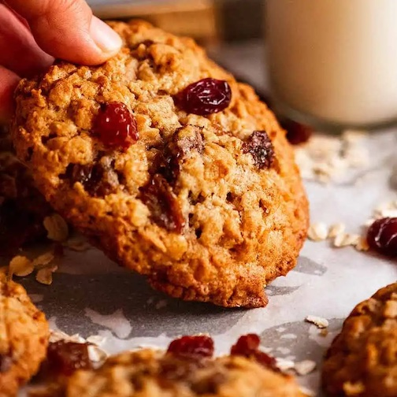
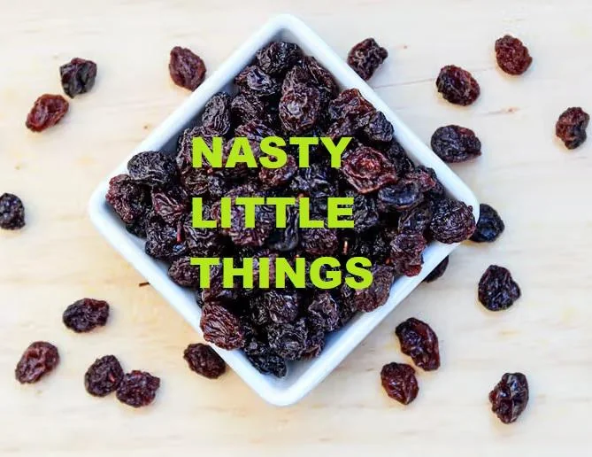
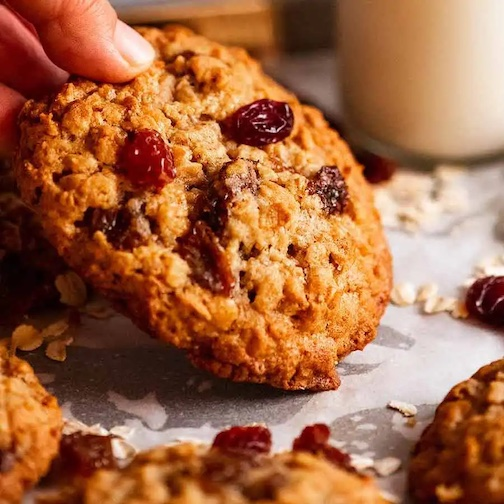
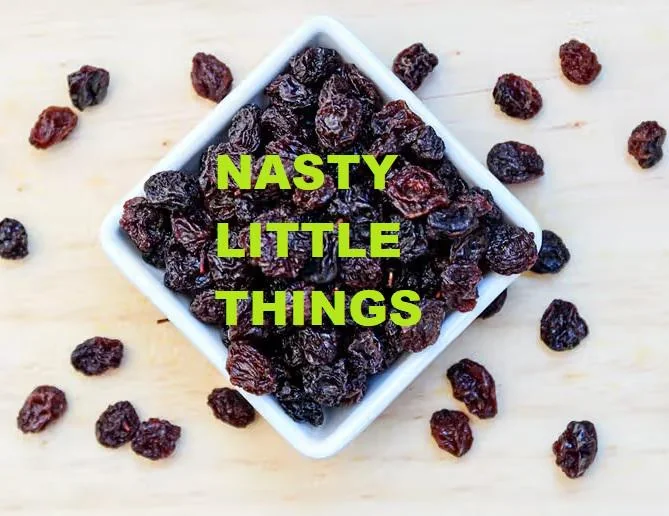
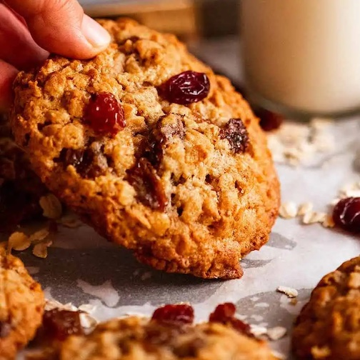

Rasins are the bane of my existance!!! They make you thing you are biting into a warm and chocolatey and delicious cookies, but it is a shriveled up old grape. The horrors!!!! Rasins are like deadbeat grapes and they make you think you are getting a gooey rich bite but it is a scam. Since you clicked this to learn more about Rasins, you must like rasins. STARE AT THE RASINS FOREVER. MUAHAHAHAHAHAHA (if you would like to get back hit the back arrow but otherwise) MUAHAHAHAHAHAA

